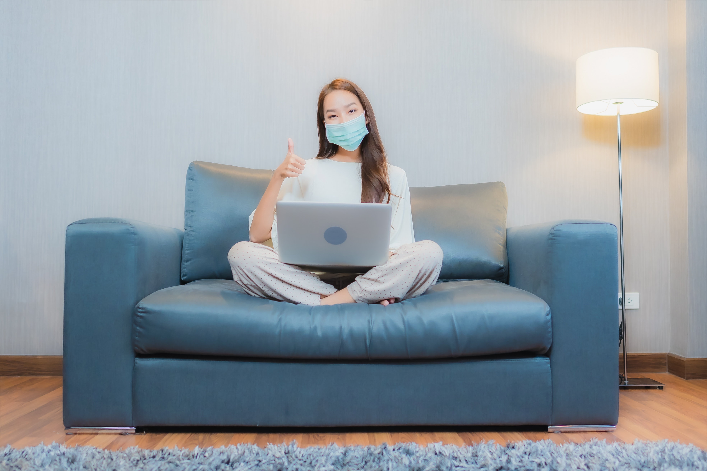
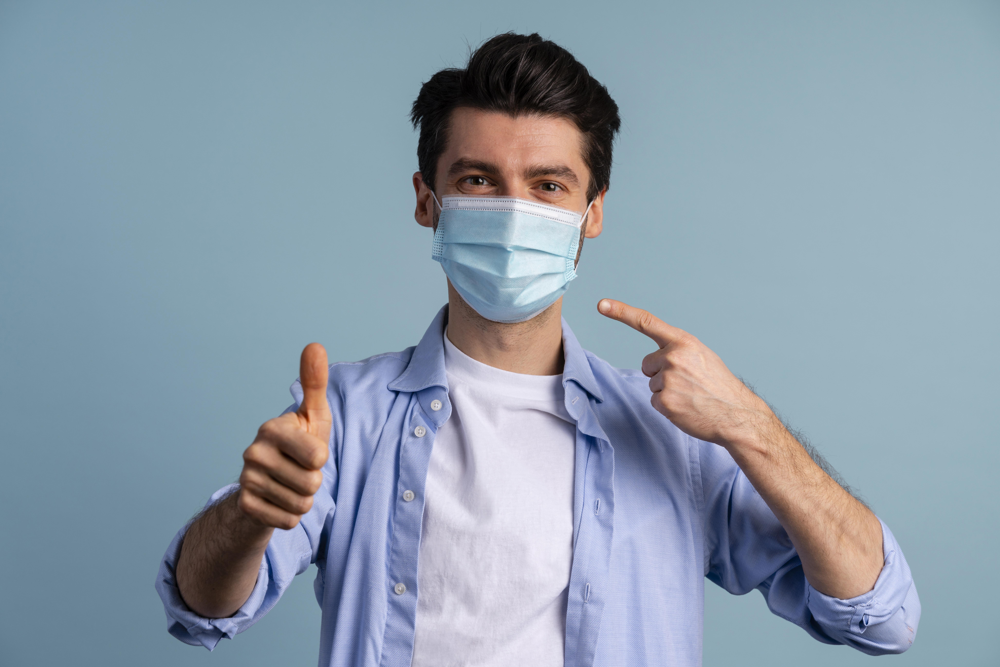

About COVID-19
Coronavirus disease (COVID-19) is an infectious disease caused by the SARS-CoV-2 virus. Most people infected with the virus will experience mild to moderate respiratory illness and recover without requiring special treatment. However, some will become seriously ill and require medical attention. Older people and those with underlying medical conditions like cardiovascular disease, diabetes, chronic respiratory disease, or cancer are more likely to develop serious illness. Anyone can get sick with COVID-19 and become seriously ill or die at any age.

TRACEZONE helps track the number of reported cases and deaths worldwide.
The application will provide the following data of every country such as:
- The total cases
- The total deaths
- The total active cases
- The total Covid tests
- The population of every country
Where are cases still high?
Daily global cases fell after a spike in the spring but are now rising again, with the emergence of the BA.4 and BA.5 subvariants of the Omicron variant.
Studies suggest that Omicron - which quickly became dominant in numerous countries - is milder than the Delta variant, but far more contagious. The subvariants are even more contagious.
Prevention
Improving ventilation and filtration can help protect you from getting infected with and spreading the virus that causes COVID-19.
Symptoms
Signs and symptoms of COVID-19 may appear 2-14 days after exposure. Common signs and symptoms can include fever, cough, or tiredness.
Vaccination
Vaccination remains the safest strategy for avoiding hospitalizations, long-term health outcomes, and death.
Testing
Most tests for COVID-19 involve taking a swab sample from the back of the nose, throat, or both. But some tests require a blood sample.
In an emergency? Need help now?
Stay say. Stay healthy. Contact the COVID Response Team in case of emergency.
COVID-19 DirectorySymptoms
Fever
One of the most common symptoms of COVID-19 is a fever, which is a temporary increase in body temperature. This can occur in response to the virus as the body's immune system attempts to fight it off.
Cough
This type of cough produces no mucus or phlegm and can cause irritation in the throat. A cough can be a result of the virus affecting the respiratory system and causing inflammation.
Shortness of breath
COVID-19 can also cause shortness of breath, which is a feeling of not being able to get enough air into the lungs. Shortness of breath can occur due to inflammation in the lungs, which can make it difficult for oxygen to enter the bloodstream.
Loss of taste or smell
This can happen due to the virus affecting the nerves that control these senses, and can be a key indicator of the virus. Some people may also experience changes in taste or smell, such as a metallic or bitter taste.
Prevention
There are many ways your actions can help protect you, your household, and your community from severe illness from COVID-19.
Stay home if you're feeling sick
If you are feeling sick or have been exposed to someone who has COVID-19, it's important to stay home and self-isolate. This can help prevent the spread of the virus to others and reduce the overall number of cases.
Staying home if you're feeling sick or have been exposed to someone who has COVID-19 is an important measure to prevent the spread of the virus to others. This is because COVID-19 can be spread through respiratory droplets when an infected person talks, coughs, or sneezes. If an infected person goes out in public or interacts with others, they can potentially spread the virus to others, even if they are not showing any symptoms.
Avoid large gatherings
Avoiding large gatherings is another important prevention measure, as crowded indoor spaces increase the risk of transmission. Instead, opt for virtual gatherings or outdoor activities where social distancing can be maintained.

Indoor spaces with poor ventilation, such as crowded bars or clubs, are particularly high-risk environments for the spread of COVID-19. This is because the virus can linger in the air and infect others. It is recommended to opt for virtual gatherings or outdoor activities where social distancing can be maintained. Outdoor spaces with good ventilation can reduce the risk of transmission, as the virus is more easily dispersed in the open air.
Wash your hands frequently
Washing your hands frequently with soap and water for at least 20 seconds can help prevent the spread of the virus.

This is because the virus can live on surfaces, and touching your face after touching a contaminated surface can increase the risk of infection. It's important to wash hands before eating or touching one's face, as well as after touching public surfaces or coming into contact with others. Hand sanitizer can also be used when soap and water are not available.
Practice social distancing
Social distancing, also known as physical distancing, involves staying at least six feet away from other people in public spaces.

This can help reduce the spread of the virus, especially in situations where it may be difficult to wear a mask. Social distancing can be particularly important in enclosed or crowded spaces, as well as in situations where there may be prolonged contact with others.
Wear a mask
Wearing a mask is an important prevention measure that can help slow the spread of the virus. Masks act as a physical barrier that can help prevent droplets from being released into the air when talking, coughing, or sneezing.
This reduces the risk of transmitting the virus to others. Masks should cover the mouth and nose, and should be worn in public spaces or when around people who are not part of the same household. It's important to wear masks properly and consistently, as improper use can decrease their effectiveness.
Vaccination
Vaccination is one of the most effective ways to prevent COVID-19.

COVID-19 vaccines have undergone rigorous testing and have been shown to be safe and effective at reducing the likelihood of getting infected, and the severity of the disease. By getting vaccinated, individuals can protect themselves and others from COVID-19, and help reduce the overall number of cases in the community.
Know your Vaccines
Current evidence of the COVID-19 vaccines with Emergency Use Authorization (EUA) approvals by Philippine Food and Drug Administration.
{kind=link}
{kind=link}
{kind=link}
{kind=link}
{kind=link}
{kind=link}
{kind=link}
{kind=link}
Gallery


Frequently Asked Questioins
-
What happens to people who get COVID-19?
As testing rates fall, it is more difficult to know how many people have COVID-19 and do not seek any treatment. At the start of the pandemic, 15% of people were thought to become seriously unwell and require hospital treatment and oxygen. More recent estimates suggest that hospitalization is required in around 3% of people with COVID-19. This is partly due to immunization, partly due to changes in the virus (especially the Omicron variants), and partly due to the availability of targeted medical treatments.
Most people make a full recovery without needing hospital treatment. For those with COVID-19 who are at high risk of severe illness (see question below), WHO has made recommendations on which drug treatments are effective in improving outcomes and preventing hospital admissions.
It is also important to be vigilant in recognizing people with severe disease and those needing hospital treatment so that they are treated early. The consequences of severe COVID-19 include death, respiratory failure, sepsis, thromboembolism (blood clots), and multiorgan failure, including injury of the heart, liver or kidneys.
In rare situations, children can develop a severe inflammatory syndrome a few weeks after infection. -
Who is most at risk of severe illness from COVID-19?
People aged 60 years and over, and those with underlying medical problems like high blood pressure, diabetes, other chronic health problems (for example those affecting the heart, lungs, kidneys, and brain), low immune function / immunosuppression (including HIV), obesity, cancer, and unvaccinated people are most at risk of severe illness. However, anyone at any age can get sick with COVID-19 and become seriously ill or die.
-
How long does it take to develop symptoms?
The time from exposure to COVID-19 to the moment when symptoms begin is, on average, 5-6 days and can range from 1-14 days. This is why people who have been exposed to the virus are advised to remain at home and stay away from others in order to prevent the spread of the virus.
-
How effective are the COVID-19 vaccines?
The COVID-19 vaccines have been shown to be highly effective at preventing infection and severe illness. It's important to get vaccinated to protect yourself and others from COVID-19.
-
How long does immunity last after getting vaccinated or recovering from COVID-19?
It's not yet clear how long immunity lasts after getting vaccinated or recovering from COVID-19. Studies are ongoing to determine the duration of immunity and whether booster shots will be needed in the future.
-
When can I stop wearing a mask and social distancing?
The guidelines for wearing masks and social distancing vary by location and can change based on local conditions. It's important to follow the guidance of public health officials and stay informed about the latest developments and recommendations regarding COVID-19.